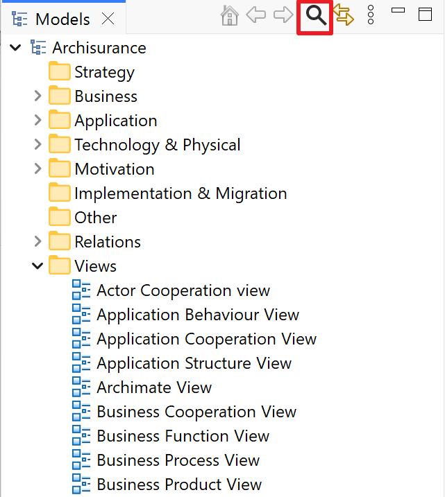
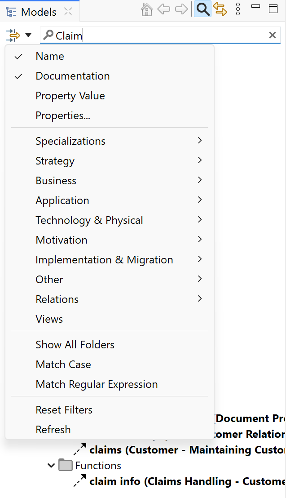
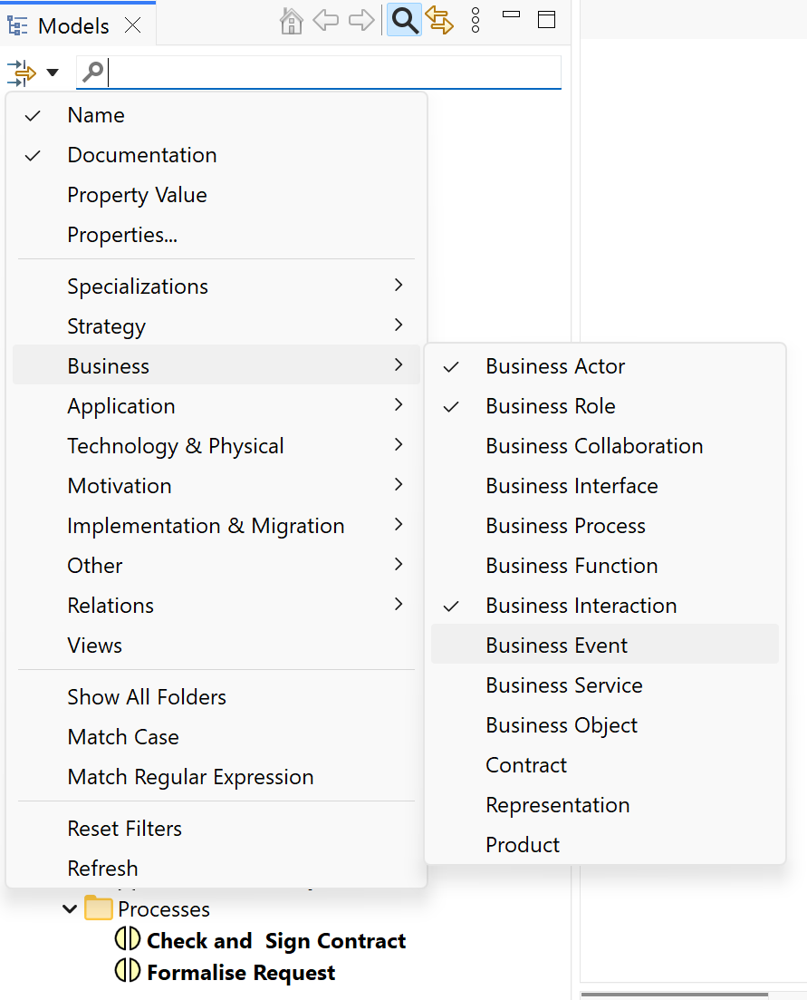
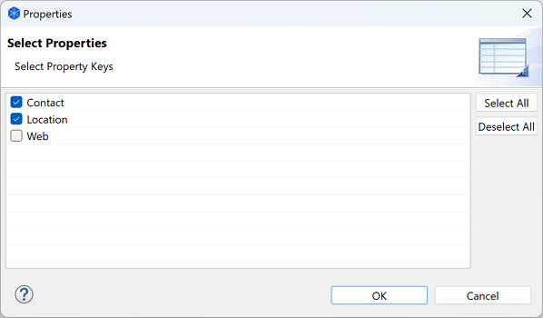
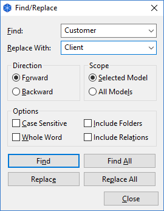

在模型上工作时，模型树中的对象数量可能会大幅增加。当然，您可能希望在主文件夹结构中添加子文件夹，以帮助组织这些对象。但是，在树中查找特定对象可能仍然很困难。
为了搜索模型树， Archi中包含一个搜索栏。可以通过单击模型树窗口工具栏上的“搜索”按钮来访问。单击此按钮将显示搜索栏：

单击此处打开搜索栏
在搜索栏的文本字段中键入时，模型树将更新为仅显示与搜索栏中的搜索条件匹配的对象。默认情况下，只有对象的名称与搜索字符串匹配。您还可以通过在搜索栏的“过滤器选项”下拉菜单中选择对象的“文档”字段进行搜索：

在“名称”和“文档”上搜索
要清除搜索文本，请单击文本右侧的图标。要清除这些筛选条件，请取消选择“名称”和/或“文档”。
要过滤某些类型的ArchiMate概念，您可以在下拉菜单中选择要包含在过滤器中的类型。您可以选择专业化认证、元素、关系和视图：

筛选某些对象类型
要重置对象类型筛选器，请选择“重置筛选器”菜单项。
您可以通过选择“属性值”下拉菜单项并在文本字段中添加一些文本来筛选用户属性的值。
要根据所选用户属性进行筛选，请通过单击“属性...”菜单项选择要包含在筛选器中的属性键，然后在选择对话框中选择所需的属性键：

选择用户属性密钥
要筛选概念的专业化认证，您可以在下拉菜单中选择要包含在筛选器中的专业化认证，其方式与对象类型相同。这将显示与所选专业化认证相匹配的所有概念。
在优化搜索时，模型树将仅显示符合搜索/筛选条件的对象（如果没有匹配的对象，则完全没有）。因此，不显示没有匹配子对象的文件夹。但是，如果您希望在搜索对象时显示这些空文件夹（例如，您可能希望将对象拖放到其他文件夹） ，则可以通过选择“显示所有文件夹”将此选项设置为筛选器菜单中的选项。
选择此选项以匹配搜索文本上的大小写。
选择此选项以使用正则表达式进行匹配。如果正则表达式无效，搜索文本将显示为红色。请注意，语法是基于Java的。
选择此菜单项将清除文档、属性、专长、元素、关系和视图的所有选择。
当模型发生外部更改时，选择此菜单项将刷新模型树。
还可以按名称查找和替换模型树中的对象。

“查找和替换”对话框